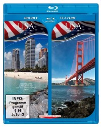

 
 IMDB-Wertung: 0.0 / 10
IMDB-Wertung: 0.0 / 10  Metascore:
Metascore: 
Einmalig in HD – Unternehmen Sie eine bildgewaltige Reise durch die faszinierenden Landschaften der Küsten der USA, die zu den wildesten der Welt, aber auch zu den beliebtesten gehören. Die wunderbaren Panoramaaufnahmen der Küsten aus der Luft eröffnen neue Einsichten in die vielfältige Landschaftzonen der USA, bestehend aus wunderbaren Stränden, Steilküsten, Naturschutzgebieten, Sumpfgebieten und Inselketten im Südosten.
Jahr: 2014
Dauer: 27 Minuten
FSK: 0
Land: Studio: Tonspuren: DD2.0 - ,
Untertitel:
Auflösung: 1080p (1920x1080) Größe: 2816 MB
Genre: Dokumentation
Regisseur:
Drehbuch: Doug Atchison
Soundtrack:
Darsteller:
Datei: X:\Dokumentationen\Von Oben\USA aus der Luft Südküste (2014, FSK0, 1920x1080) 3D.mkv seit 04.03.2015
Festplatte: HD Serien(SU-Z)+Dokus+Musik
 Es gibt insgesamt 14 Filme in der Gruppe 'Dokumentationen\Von Oben'
Es gibt insgesamt 14 Filme in der Gruppe 'Dokumentationen\Von Oben'